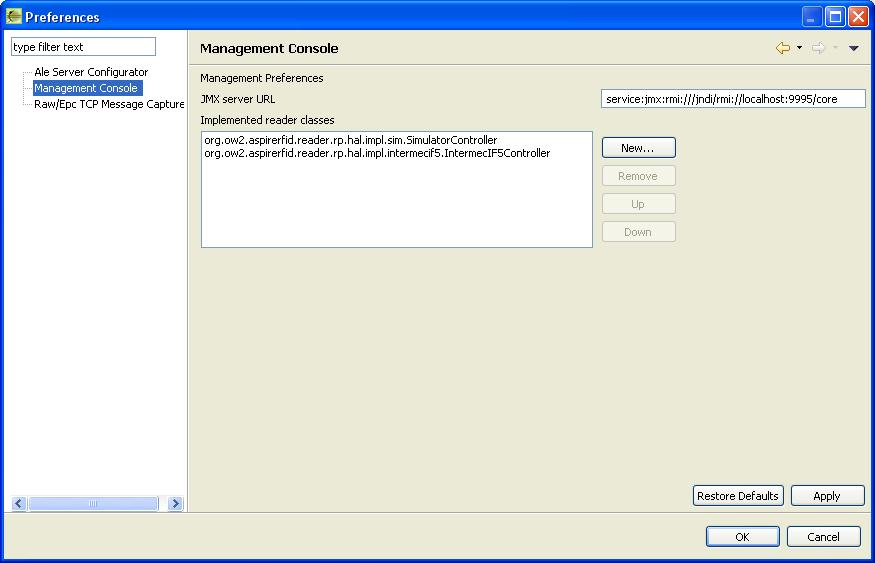

PDF
PDF History
HistoryReader Configuration & Management Plug-in
Introduction
This tool provides a management front-end based on the Java Management extensions (JMX) for the Reader Core proxy. It enables the end user to edit the runtime parameters of the proxy and to manage its status. Though the management interface is usable through any jmx capable console, like SUN's jconsole, this plug-in enables integrated and user friendly management.Users Guide
Download & Run
You can download the Reader Configuration & Management tool from the AspireRFID forge named “AspireRfidIdeToolCollection” under "AspireRFID AITdev" package. Just decompress it and hit the “aspireRfidIDE” executable Also you can download from the same link the “ASPIRE_APPLICATION_FILES”. Decompress and place its content at your home directory "user.home\AspireRFID\IDE\..." (e.g. “C:\Documents and Settings\nkef\AspireRFID\IDE\”).StartUp
You can gain access to the management and the configuration interface from the AspireRfidIDE by clicking Window -> Show view and then selecting JMX management console or JMX configuration console.Before trying to use plug-in you should make sure that you have a Reader Core proxy instance running and you have configured properly the AspireIDE configuration regarding the JMX endpoint, located at Window->Preferences->Management console.The JMX server URL field should contain the appropriate url pointing to the OSGI JMX RMI endpointJMX management console
This tool provides high level control over the reader proxy. It provides the user with the following functionality:- Current status: Displays the current status of the proxy component. The possible values are:
- DISCONNECTED: The proxy cannot be reached. This could be happening either because the OSGI container is shut down, or because the Reader Core Proxy bundle is not properly deployed, or the bundle is stopped or the URL connection string, mentioned before is wrong.
- STOPPED: The plug-in has been connected to the bundle and its operation is set to Stopped
- STARTED: The plug-in has been connected to the bundle and its operation is set to Started
- Refresh status: Refreshed the current status (described above).
- Start: Starts the reader proxy operation
- Stop: Stops the reader proxy operation
- Reset configuration: Deletes every change that may have happened to the proxy component and restores the default configuration file. The default configuration loads by the simulator reader when the proxy is started
- Save and load updated configuration: This operation saves the updated configuration to a new configuration file, and loads it to the runtime. You can update the configuration through the JMX configuration console. This operation is mandatory if you have changed any parameter through this console and you want to apply it.
- Download configuration file: This operation enables you to backup the currently loaded configuration and save it locally as a XML file. When you click on this button a Save As dialogue will be presented to choose the location and the name of the backup file.
- Upload configuration file: This operation enables you to restore a previously backed up XML configuration file and set the new configuration as active. By clicking on the button you will be prompted of a dialogue that will let you choose a configuration file. You should backup the current configuration before trying to upload a new one.
JMX configuration console
When you open the console, if the connection URL is valid and operational, all configuration fields will be populated with the live configuration information from the server. There are 4 panels with grouped configuration that can be edited. Every update that is executed through the console is NOT activated immediately. Instead you have to hit the Save and load updated configuration button located an the JMX management console. This will save the configuration and restart the reader with the updated configuration. We will now iterate of the available configuration groups.Reader information
This is general information regarding the reader proxy that is used for identification purposes. The reader name parameter is also used by the filtering and collection server to identify the proxy component.Main configuration
These configuration parameters are of general purpose that define operational parameters of the proxy module. These parameters are referenced and documented at the EPCglobal Reader Protocol standard v1.1. In most cases you will not need to alter any of these parameters, except if there is a port conflict with the TCP and/or HTTP servers that may be used. By default the proxy opens two server connections, a TCP server on port 5566 and one HTTP server on port 8000. This configuration can be altered from this configuration group.Sources
Sources are an abstraction through which we can manage and access a group of read points. These read points may be scattered and could have miscellaneous capabilities. Fro example they could be able to read RFID or bardcode or RF tags. Through this configuration group you can add a new source by entering a source name and selecting an available read point to connect with the source. You can add a read point through the readers configuration parameters group. Through the current source group you can select the source that will be be used (active) in the proxy configuration.Readers configuration
Through this group you may add a new reader to the configuration or change the configuration of an existing reader.- To add a new reader you should start by selecting NEW from the existing readers list. The you set the reader name, the class name and the properties file of the reader and push the Add reader button. After adding the reader you can set its read point names.
- To edit the configuration of a reader you should first select it through the existing readers list. Then you are able to view some permanent configuration parameters of the selected reader and add a read point.
Developers Guide
In this section we will describe the JMX aspects of this component and information on how to add information for a new reader that will be used with the Reader Core Proxy.Adding new reader information
As it is explained at the reader core proxy page, you can add a non RP compliant reader to the Aspire middleware. In order to enable the end user to activate and use a new reader implementation, apart from deploying the bundle to the OSGI server, you have to follow some steps to make this information available.The option to add a new reader is available at the Readers configuration tab of the JMX configuration console. To add a new reader, the user has to select NEW from the readers list and then select the implementation class name from the available list and define the properties file, if there is such file required by the implementation. The available class files are defined through the Preferences dialogue (Window->Preferences->Management console). Through this form you can add the name of the class file implementing the org.ow2.aspirerfid.reader.rp.impl.hal.HardwareAbstraction interface, as defined here. You should also provide the user of the information regarding the properties file location, which should be existent within the deployed bundle. The property file location should be relative to bundle root directory (e.g. /props/ConfigFile.properties).JMX MBean
Through the managed OSGI (MOSGI) we expose one managed bean (MBean) that provides several operations and attributes. This MBean is defined within the ReaderProtocol bundle through the Java interface org.ow2.aspirerfid.reader.rp.RmRpMBean. The MBean implementation exists in the ReaderProtocolImpl bundle through the org.ow2.aspirerfid.reader.rp.impl.ReaderProtocol class. The following is provides is the list of operations and attributes.MBean Operations
- Start,stop and check the functionality of the reader proxy based on the active configuration
public boolean start(); public boolean stop(); public boolean isStarted();
- Loads an updated configuration and makes it active
public void loadConfig();- Loads the default configuration and makes it active
public void resetConfig();- Loads an XML serialized configuration file and makes it active
public void loadConfigurationFile(String serializedFile);
- Serializes the XML configuration file and returns it
public String saveConfigurationFileAs();
- Get or set functional parameters of the proxy bundle, without making them active. To activate and save the configuration you have to use the loadConfig operation.
public void setEPC(String epc); public String getEPC();public void setName(String name); public String getName();public void setManufacturer(String manufacturer); public String getManufacturer();public void setManufacturerDescription(String desc); public String getManufacturerDescription();public void setModel(String model); public String getModel();public void setHandle(int handle); public int getHandle();public void setRole(String role); public String getRole();public void setMaxSourceNumber(int number); public int getMaxSourceNumber();public void setMaxTagSelectorNumber(int number); public int getMaxTagSelectorNumber();public void setMaxTriggerNumber(int number); public int getMaxTriggerNumber();public void addReader(String name, String className, String propertiesFile); public void addReaderReadpoint(String readerName, String readpoint);public String[] getReaders();public String getReaderClassName(String readerName);public String getReaderPropertiesFile(String readerName);public String[] getReadPointNames(String readerName);public void setCurrentSource(String source); public String getCurrentSource();public void addSource(String name, boolean fixed, String readpoint);public String[] getSources();public boolean getIsSourceFixed(String sourceName);public String getSourceReadpoint(String sourceName);public void addIOEdgeTriggerPortManager(String port); public String[] getIOEdgeTriggerPortManager();public void addIOValueTriggerPortManager(String port); public String[] getIOValueTriggerPortManager();public void setTcpServerConnection(boolean isEnabled); public boolean getTcpServerConnection();public void setTcpPort(int port); public int getTcpPort();public void setHttpServerConnectionEnabled(boolean isEnabled); public boolean getHttpServerConnectionEnabled();public void setHttpPort(int port); public int getHttpPort();public void setNotificationListenTimeout(long timeout); public long getNotificationListenTimeout();public void setThreadPoolSize(int size); public int getThreadPoolSize();//For the active source public void setIsSourceFized(boolean isFixed);public void setGlimpsedTimeout(long timeout); public long getGlimpsedTimeout();public void setObservedThreshold(long threshold); public long getObservedThreshold();public void setObservedTimeout(long timeout); public long getObservedTimeout();public void setLostTimeout(long timeout); public long getLostTimeout();public void setReadCyclesPerTrigger(int cycles); public int getReadCyclesPerTrigger();public void setMaxReadDutyCycles(int cycles); public int getMaxReadDutyCycles();public void setReadTimeout(long timeout); public long getReadTimeout();


{kind=link}
{kind=link}